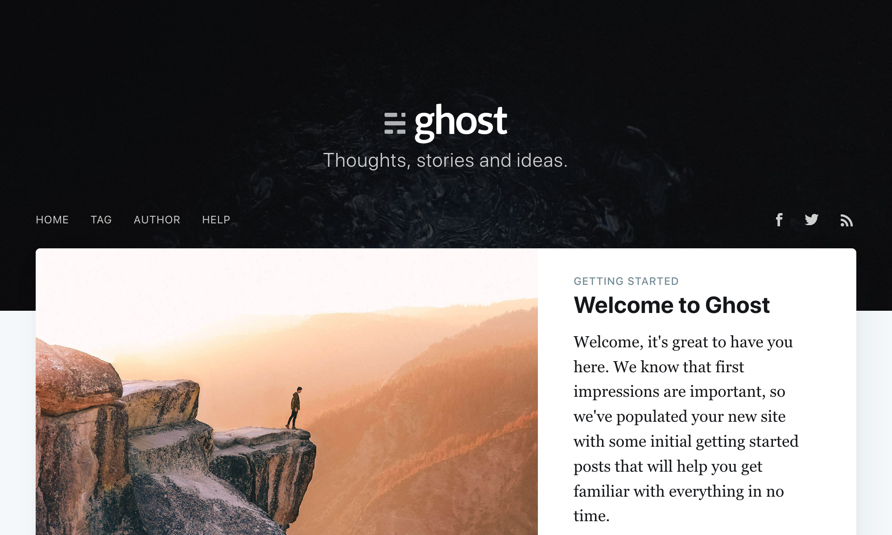

How to Install Apps on Kubernetes with Helm
Updated by Linode Written by Linode
What is Helm?
Helm is a tool that assists with installing and managing applications on Kubernetes clusters. It is often referred to as “the package manager for Kubernetes,” and it provides functions that are similar to a package manager for an operating system:
Helm prescribes a common format and directory structure for packaging your Kubernetes resources, known as a Helm chart.
Helm provides a public repository of charts for popular software. You can also retrieve charts from third-party repositories, author and contribute your own charts to someone else’s repository, or run your own chart repository.
The Helm client software offers commands for: listing and searching for charts by keyword, installing applications to your cluster from charts, upgrading those applications, removing applications, and other management functions.
Charts
The components of a Kubernetes application–deployments, services, ingresses, and other objects–are listed in manifest files (in the YAML file format). Kubernetes does not tell you how you should organize those files, though the Kubernetes documentation does offer a general set of best practices.
Helm charts are the software packaging format for Helm. A chart specifies a file and directory structure that you follow when packaging your manifests. The structure looks as follows:
chart-name/
Chart.yaml
LICENSE
README.md
requirements.yaml
values.yaml
charts/
templates/
templates/NOTES.txt
| File or Directory | Description |
|---|---|
| Chart.yaml | General information about the chart, including the chart name, a version number, and a description. |
| LICENSE | A plain-text file with licensing information for the chart and for the applications installed by the chart. Optional. |
| README.md | A Markdown file with instructions that a user of a chart may want to know when installing and using the chart, including a description of the app that the chart installs and the template values that can be set by the user. Optional. |
| requirements.yaml | A listing of the charts that this chart depends on. This list will specify the chart name version number for each dependency, as well as the repository URL that the chart can be retrieved from. Optional. |
| values.yaml | Default values for the variables in your manifests’ templates. |
| charts/ | A directory which stores chart dependencies that you manually copy into your project, instead of linking to them from the requirements.yaml file. |
| templates/ | Your Kubernetes manifests are stored in the templates/ directory. Helm will interpret your manifests using the Go templating language before applying them to your cluster. You can use the template language to insert variables into your manifests, and users of your chart will be able to enter their own values for those variables. |
| templates/NOTES.txt | A plain-text file which will print to a user’s terminal when they install the chart. This text can be used to display post-installation instructions or other information that a user may want to know. Optional. |
Releases
When you tell Helm to install a chart, you can specify variable values to be inserted into the chart’s manifest templates. Helm will then compile those templates into manifests that can be applied to your cluster. When it does this, it creates a new release.
You can install a chart to the same cluster more than once. Each time you tell Helm to install a chart, it creates another release for that chart. A release can be upgraded when a new version of a chart is available, or even when you just want to supply new variable values to the chart. Helm tracks each upgrade to your release, and it allows you to roll back an upgrade. A release can be easily deleted from your cluster, and you can even roll back release deletions.
Helm Client and Helm Tiller
Helm operates with two components:
The Helm client software that issues commands to your cluster. You run the client software on your computer, in your CI/CD environment, or anywhere else you’d like
A server component runs on your cluster and receives commands from the Helm client software. This component is called Tiller. Tiller is responsible for directly interacting with the Kubernetes API (which the client software does not do). Tiller maintains the state for your Helm releases.
Before You Begin
Install the Kubernetes CLI (
kubectl) on your computer, if it is not already.You should have a Kubernetes cluster running prior to starting this guide. One quick way to get a cluster up is with Linode’s
k8s-alphaCLI command. This guide’s examples only require a cluster with one worker node. We recommend that you create cluster nodes that are at the Linode 4GB tier or higher.This guide also assumes that your cluster has role-based access control (RBAC) enabled. This feature became available in Kubernetes 1.6. It is enabled on clusters created via the
k8s-alphaLinode CLI.Note
This guide’s example instructions will also result in the creation of a Block Storage Volume and a NodeBalancer, which are also billable resources. If you do not want to keep using the example application after you finish reviewing your guide, make sure to delete these resources afterward.You should also make sure that your Kubernetes CLI is using the right cluster context. Run the
get-contextssubcommand to check:kubectl config get-contextsYou can set kubectl to use a certain cluster context with the
use-contextsubcommand and the cluster name that was previously output from theget-contextssubcommand:kubectl config use-context your-cluster-nameIt is beneficial to have a registered domain name for this guide’s example app, but it is not required.
Install Helm
Install the Helm Client
Install the Helm client software on your computer:
Linux. Run the client installer script that Helm provides:
curl https://raw.githubusercontent.com/helm/helm/master/scripts/get > get_helm.sh chmod 700 get_helm.sh ./get_helm.shmacOS. Use Homebrew to install:
brew install kubernetes-helmWindows. Use Chocolatey to install:
choco install kubernetes-helm
Install Tiller on your Cluster
Tiller’s default installation instructions will attempt to install it without adequate permissions on a cluster with RBAC enabled, and it will fail. Alternative instructions are available which grant Tiller the appropriate permissions:
NoteThe following instructions provide Tiller to thecluster-adminrole, which is a privileged Kubernetes API user for your cluster. This is a potential security concern. Other access levels for Tiller are possible, like restricting Tiller and the charts it installs to a single namespace. The Bitnami Engineering blog has an article which further explores security in Helm.
Create a file on your computer named
rbac-config.yamlwith the following snippet:- rbac-config.yaml
-
1 2 3 4 5 6 7 8 9 10 11 12 13 14 15 16 17 18apiVersion: v1 kind: ServiceAccount metadata: name: tiller namespace: kube-system --- apiVersion: rbac.authorization.k8s.io/v1 kind: ClusterRoleBinding metadata: name: tiller roleRef: apiGroup: rbac.authorization.k8s.io kind: ClusterRole name: cluster-admin subjects: - kind: ServiceAccount name: tiller namespace: kube-system
This configuration creates a Kubernetes Service Account for Tiller, and then binds it to the
cluster-adminrole.Apply this configuration to your cluster:
kubectl create -f rbac-config.yamlserviceaccount "tiller" created clusterrolebinding "tiller" createdInitialize Tiller on the cluster:
helm init --service-account tiller --history-max 200Note
The--history-maxoption prevents Helm’s historical record of the objects it tracks from growing too large.You should see output like:
$HELM_HOME has been configured at /Users/your-user/.helm. Tiller (the Helm server-side component) has been installed into your Kubernetes Cluster. Please note: by default, Tiller is deployed with an insecure 'allow unauthenticated users' policy. To prevent this, run `helm init` with the --tiller-tls-verify flag. For more information on securing your installation see: https://docs.helm.sh/using_helm/#securing-your-helm-installation Happy Helming!The pod for Tiller will be running in the
kube-systemnamespace:kubectl get pods --namespace kube-system | grep tiller tiller-deploy-b6647fc9d-vcdms 1/1 Running 0 1m
Use Helm Charts to Install Apps
This guide will use the Ghost publishing platform as the example application.
Search for a Chart
Run the
repo updatesubcommand to make sure you have a full list of available charts:helm repo updateNote
Runhelm repo listto see which repositories are registered with your client.Run the
searchcommand with a keyword to search for a chart by name:helm search ghostThe output will look like:
NAME CHART VERSION APP VERSION DESCRIPTION stable/ghost 6.7.7 2.19.4 A simple, powerful publishing platform that allows you to...The full name for the chart is
stable/ghost. Inspect the chart for more information:helm inspect stable/ghostThis command’s output will resemble the README text available for the Ghost chart in the official Helm chart repository on GitHub.
Install the Chart
The helm install command is used to install a chart by name. It can be run without any other options, but some charts expect you to pass in configuration values for the chart:
Create a file named
ghost-config.yamlon your computer from this snippet:- ghost-config.yaml
-
1 2ghostHost: ghost.example.com ghostEmail: email@example.com
Replace the value for ghostHost with a domain or subdomain that you own and would like to assign to the app, and the value for ghostEmail with your email.
Note
If you don’t own a domain name and won’t continue to use the Ghost website after finishing this guide, you can make up a domain for this configuration file.Run the
installcommand and pass in the configuration file:helm install -f ghost-config.yaml stable/ghostThe
installcommand returns immediately and does not wait until the app’s cluster objects are ready. You will see output like the following snippet, which shows that the app’s pods are still in the “Pending” state. The text displayed is generated from the contents of the chart’stemplates/NOTES.txtfile: Full output of helm install
Full output of helm install
NAME: oldfashioned-cricket LAST DEPLOYED: Tue Apr 16 09:15:41 2019 NAMESPACE: default STATUS: DEPLOYED RESOURCES: ==> v1/ConfigMap NAME DATA AGE oldfashioned-cricket-mariadb 1 1s oldfashioned-cricket-mariadb-tests 1 1s ==> v1/PersistentVolumeClaim NAME STATUS VOLUME CAPACITY ACCESS MODES STORAGECLASS AGE oldfashioned-cricket-ghost Pending linode-block-storage 1s ==> v1/Pod(related) NAME READY STATUS RESTARTS AGE oldfashioned-cricket-ghost-64ff89b9d6-9ngjs 0/1 Pending 0 1s oldfashioned-cricket-mariadb-0 0/1 Pending 0 1s ==> v1/Secret NAME TYPE DATA AGE oldfashioned-cricket-ghost Opaque 1 1s oldfashioned-cricket-mariadb Opaque 2 1s ==> v1/Service NAME TYPE CLUSTER-IP EXTERNAL-IP PORT(S) AGE oldfashioned-cricket-ghost LoadBalancer 10.110.3.191 <pending> 80:32658/TCP 1s oldfashioned-cricket-mariadb ClusterIP 10.107.128.144 <none> 3306/TCP 1s ==> v1beta1/Deployment NAME READY UP-TO-DATE AVAILABLE AGE oldfashioned-cricket-ghost 0/1 1 0 1s ==> v1beta1/StatefulSet NAME READY AGE oldfashioned-cricket-mariadb 0/1 1s NOTES: 1. Get the Ghost URL by running: echo Blog URL : http://ghost.example.com/ echo Admin URL : http://ghost.example.com/ghost 2. Get your Ghost login credentials by running: echo Email: email@example.com echo Password: $(kubectl get secret --namespace default oldfashioned-cricket-ghost -o jsonpath="{.data.ghost-password}" | base64 --decode)Helm has created a new release and assigned it a random name. Run the
lscommand to get a list of all of your releases:helm lsThe output will look as follows:
NAME REVISION UPDATED STATUS CHART APP VERSION NAMESPACE oldfashioned-cricket 1 Tue Apr 16 09:15:41 2019 DEPLOYED ghost-6.7.7 2.19.4 defaultYou can check on the status of the release by running the
statuscommand:helm status oldfashioned-cricketThis command will show the same output that was displayed after the
helm installcommand, but the current state of the cluster objects will be updated.
Access your App
Run the
helm statuscommand again and observe the “Service” section:==> v1/Service NAME TYPE CLUSTER-IP EXTERNAL-IP PORT(S) AGE oldfashioned-cricket-ghost LoadBalancer 10.110.3.191 104.237.148.15 80:32658/TCP 11m oldfashioned-cricket-mariadb ClusterIP 10.107.128.144 <none> 3306/TCP 11mThe LoadBalancer that was created for the app will be displayed. Because this example uses a cluster created with Linode’s
k8s-alphaCLI (which pre-installs the Linode CCM), the LoadBalancer will be implemented as a Linode NodeBalancer.Copy the value under the
EXTERNAL-IPcolumn for the LoadBalancer and then paste it into your web browser. You should see the Ghost website:
Revisit the output from the
statuscommand. Instructions for logging into your Ghost website will be displayed:1. Get the Ghost URL by running: echo Blog URL : http://ghost.example.com/ echo Admin URL : http://ghost.example.com/ghost 2. Get your Ghost login credentials by running: echo Email: email@example.com echo Password: $(kubectl get secret --namespace default oldfashioned-cricket-ghost -o jsonpath="{.data.ghost-password}" | base64 --decode)Retrieve the auto-generated password for your app:
echo Password: $(kubectl get secret --namespace default oldfashioned-cricket-ghost -o jsonpath="{.data.ghost-password}" | base64 --decode)You haven’t set up DNS for your site yet, but you can instead access the admin interface by visiting the
ghostURL on your LoadBalancer IP address (e.g.http://104.237.148.15/ghost). Visit this page in your browser and then enter your email and password. You should be granted access to the administrative interface.Set up DNS for your app. You can do this by creating an A record for your domain which is assigned to the external IP for your app’s LoadBalancer. Review Linode’s DNS Manager guide for instructions.
Upgrade your App
The upgrade command can be used to upgrade an existing release to a new version of a chart, or just to supply new chart values:
In your computer’s
ghost-config.yamlfile, add a line for the title of the website:- ghost-config.yaml
-
1 2 3ghostHost: ghost.example.com ghostEmail: email@example.com ghostBlogTitle: Example Site Name
Run the upgrade command, specifying the configuration file, release name, and chart name:
helm upgrade -f ghost-config.yaml oldfashioned-cricket stable/ghost
Roll Back a Release
Upgrades (and even deletions) can be rolled back if something goes wrong:
Run the
helm lscommand and observe the number under the “REVISION” column for your release:NAME REVISION UPDATED STATUS CHART APP VERSION NAMESPACE oldfashioned-cricket 2 Tue Apr 16 10:02:58 2019 DEPLOYED ghost-6.7.7 2.19.4 defaultEvery time you perform an upgrade, the revision count is incremented by 1 (and the counter starts at 1 when you first install a chart). So, your current revision number is 2. To roll back the upgrade you just performed, enter the previous revision number:
helm rollback oldfashioned-cricket 1
Delete a Release
Use the
deletecommand with the name of a release to delete it:helm delete oldfashioned-cricketYou should also confirm in the Linode Cloud Manager that the Volumes and NodeBalancer created for the app are removed as well.
Helm will still save information about the deleted release. You can list deleted releases:
helm list --deletedYou can use the revision number of a deleted release to roll back the deletion.
To fully remove a release, use the
--purgeoption with thedeletecommand:helm delete oldfashioned-cricket --purge
More Information
You may wish to consult the following resources for additional information on this topic. While these are provided in the hope that they will be useful, please note that we cannot vouch for the accuracy or timeliness of externally hosted materials.
Join our Community
Find answers, ask questions, and help others.
This guide is published under a CC BY-ND 4.0 license.